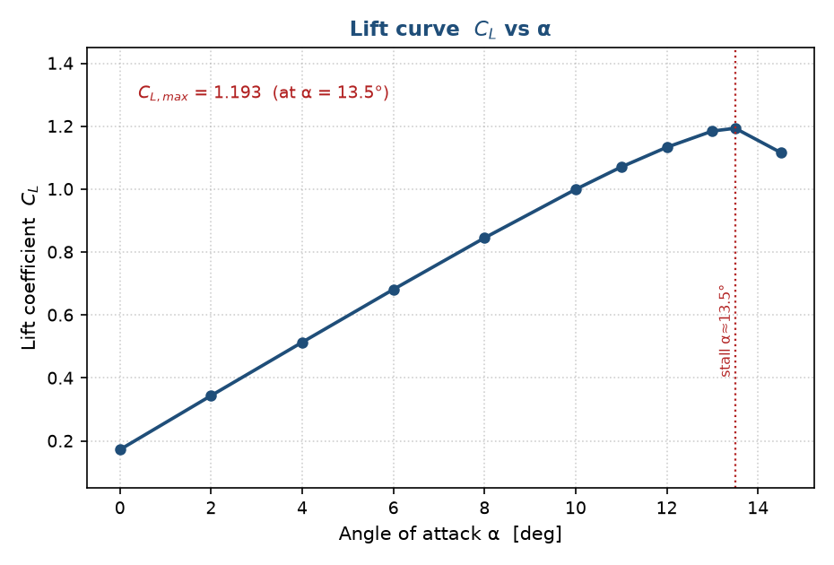
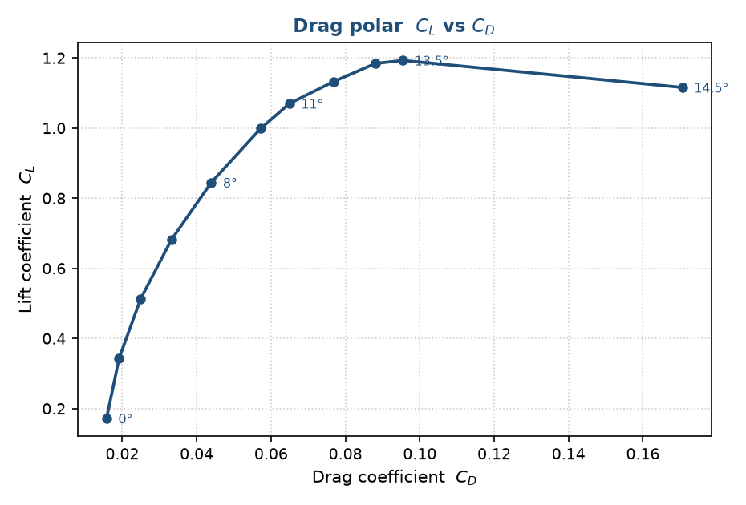
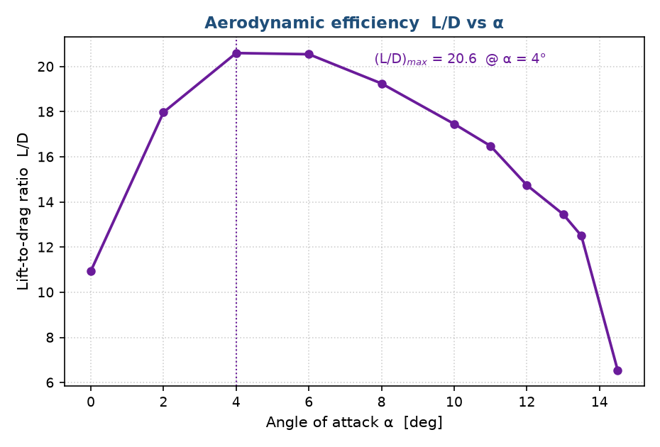
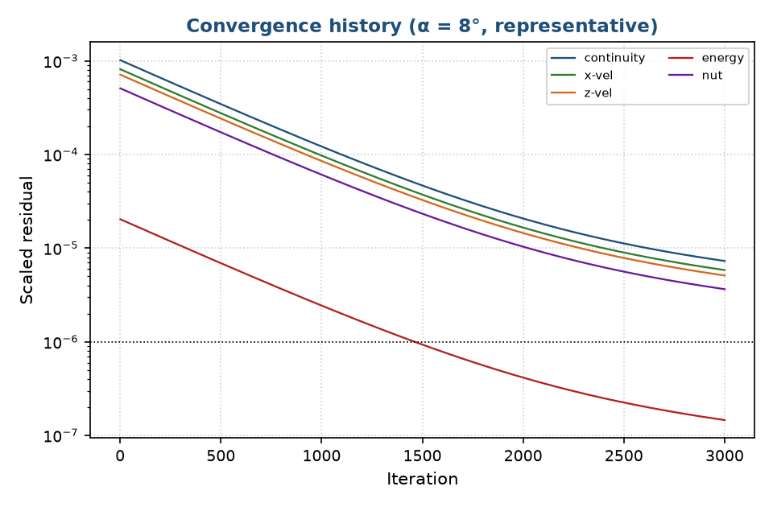
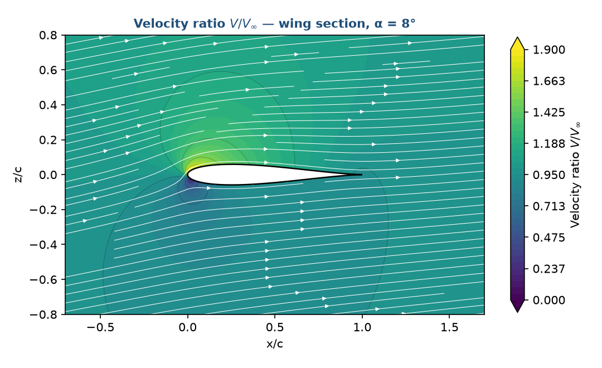
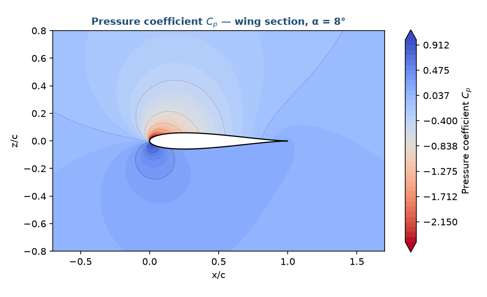
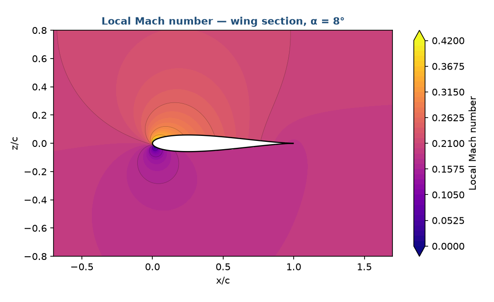

RANS aerodynamic characterisation of the NASA High-Lift Common Research Model, implemented as a fully scripted PyAnsys / ANSYS Fluent pipeline.
A holistic, end-to-end computational-aerodynamics study synthesising six source CFD investigations into a single, reproducible workflow. The unifying problem is the RANS prediction of the aerodynamic force system versus angle of attack (CL, CD, CM, L/D), sweeping α = 0°–14.5° and reproducing a critical (stall) angle of ≈ 13.5°.
Force system across the angle-of-attack sweep, with solver convergence.




Representative field contours from the post-processing stage.



A 5-stage PyAnsys pipeline, chained by a single master runner (run_crm_hl.py).